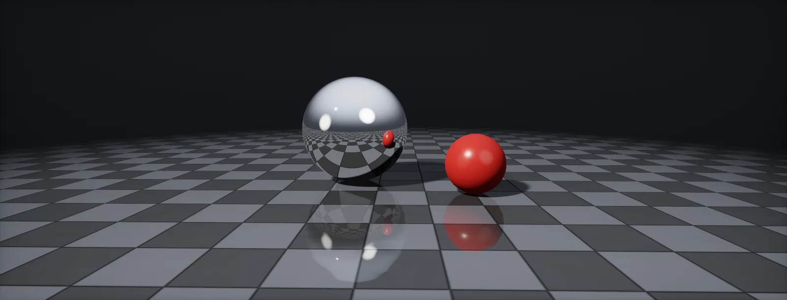

Reflections, Mirrors and Cheap Metal
Where reflections come from in a real-time renderer: probes and box projection, screen-space and ray-traced reflections, planar mirrors, specular occlusion, and cheap fallbacks that still sell a metal, built in Unity HDRP and Unreal.

Where reflections come from
A smooth surface shows what lies in the mirror direction. With the view vector V (from the surface to the eye) and the normal N, that direction is R = 2(N·V)N − V (reflection). A rough surface shows a blurred average around R (image-based lighting). The whole problem of real-time reflections is answering one question per pixel: what is out there along R?
No technique answers it fully and cheaply, so engines stack several and fall back from the most exact to the cheapest:
- Ray tracing or screen-space reflections, where they find a hit.
- A planar reflection, on surfaces that have one.
- Local cubemap probes, blended by distance.
- The sky.
- Black, if nothing is set up, which is why metals in an empty scene look dead.
The same chain holds in every renderer: HDRP documents it as its reflection hierarchy, Unreal's Lumen falls back to its own scene data and then to the sky. The chapters go through each step.
Probes: the environment in a cube
A is a camera that renders its surroundings into a cubemap, once (baked) or now and then (real-time). Shaders look the cubemap up along R. That covers the static world everywhere at the cost of a texture read.
Rough surfaces need blurred lookups. Probes store pre-blurred versions in their mip levels, each convolved with the shape of a wider highlight, and the shader picks the mip from the roughness (the split-sum approximation separates this blur from the Fresnel part). Unity maps roughness to mip like this:
Two consequences: a rough surface reads a tiny mip, so the probe resolution matters only for smooth surfaces; and anything not in the probe (moving objects, the player) is missing from its reflections. Probes are the base layer, the more exact techniques add detail on top.
Box projection
A cubemap is captured from one point and treats everything as infinitely far away. Inside a room that is wrong: a point near the right wall that looks up-left should see the left wall from its position, not from the probe's. The error makes reflections slide across the floor as you walk.
(parallax correction) fixes it for box-shaped rooms: intersect the ray from the shaded point with the room box (ray against box), then look up the cubemap in the direction from the probe to that hit point:
Set the box to the walls, not to where you want the probe to apply: those are two different volumes (HDRP calls them influence and proxy volume). For L-shaped or round rooms, split into several boxes or accept some sliding. The same trick drives interior mapping, which fakes rooms behind windows with a box and a cubemap.
Screen-space reflections
(SSR) reuse the frame already rendered. For each smooth pixel, the shader steps along R through the depth buffer until the ray passes behind a surface, then takes that pixel's colour. Moving objects and the player appear in reflections, at the cost of one screen pass.
The limitation is in the name: only what is on screen can be found. Move the shaded point and the box, and watch when the reflection disappears:
Typical artefacts follow from that: reflections cut off at the top of the screen, holes behind characters, reflections vanishing when you look down. Engines fade SSR out near the screen border and blend to the probe below it, which is why a good probe still matters. The depth buffer also has no thickness: a thin pole and a thick wall look the same, so rays slip behind objects or stop too early; HDRP exposes this as Object Thickness.
Planar reflections and mirrors
A flat mirror has an exact solution: render the scene a second time from a camera mirrored across the plane, and show that image on the mirror. Mirroring a point across a plane with normal n at distance d is p′ = p − 2(n·p − d)n:
Two details make it work. The mirrored camera must not see things behind the mirror, so its near plane is replaced by the mirror plane (an oblique clip plane). And its triangles come out with reversed winding, so the culling direction flips. Engines handle both in their planar probes; a hand-made render-texture mirror must do it too.
The cost is the second render: draw calls, shadows, everything. Keep the reflection camera cheap: lower resolution, a culling mask without small props, no post-processing, a shorter far plane. Rough mirrors also need the image blurred, so a perfect mirror (roughness 0) is the cheapest planar case.
Ray-traced reflections and Lumen
Ray tracing answers the question directly: shoot a ray along R through the whole scene, off screen included, and shade the hit. The price is per ray, and a rough surface needs several rays to average its blurred reflection, plus denoising. So every implementation limits the work: rays only for pixels smoother than a threshold, at reduced resolution, one ray each, with the probe below the threshold:
Unreal's Lumen traces against a simplified scene (signed distance fields or the hardware ray-tracing scene) and shades hits from a cached surface lighting by default; hit lighting shades them fully and costs more. HDRP's ray-traced reflections trace the real meshes. In both, the roughness threshold is the main quality and cost control.
Specular occlusion
A probe captures the room from its centre. In a crevice or under a table, most of that environment is blocked, but the probe does not know it, so crevices glow with reflected sky. Real-time renderers derive a from the ambient occlusion, the view angle and the roughness (Lagarde and de Rousiers, 2014):
It is a fit, not physics, but it removes most leaks. Screen-space and ray-traced reflections need it less, because they see the actual surroundings. Bent normals (the average open direction, baked with the AO) improve it further, and HDRP has a mode for them.
Cheap metal: gradients, matcaps, one probe
A metal needs something to reflect, but it does not always need the real world. On mobile, for distant objects or in stylised games, three colours do a surprising job: ground, a bright horizon, sky, blended by the height of R. A soft horizon reads as a rough surface, a sharp one as chrome:
Related shortcuts:
- Matcap: a picture of a lit sphere, looked up with the view-space normal (matcaps). Bakes light and reflection together; perfect for tools and stylised looks, wrong as the camera turns.
- One global probe: a single low-resolution cubemap of the level, no blending. The mobile default in most engines.
- Fake Fresnel: brighten the reflection at grazing angles with (1 − N·V)⁵. Cheap and does most of the work of selling a surface.
- Analytic environment BRDF: Karis' polynomial fit replaces the split-sum lookup texture with a few multiplies (the build files use it).
Choosing a mirror technique
For a given mirror or reflective surface, the question is what must appear in it and what the frame can afford:
| Technique | Reflects | Cost | Use it for | Breaks when |
|---|---|---|---|---|
| Planar reflection | everything, moving, exact | the scene drawn again per mirror | mirrors, calm water, one hero floor | the surface is not flat; several mirrors see each other |
| Render-texture camera | same as planar, set up by hand | same as planar | engines or platforms without planar probes, portals, security monitors | you forget the oblique clip plane: objects behind the mirror show up |
| Screen-space | what is on screen | one pass, scales with pixels | floors, wet streets, glossy props | the reflected thing is off screen or hidden |
| Ray tracing, Lumen | everything, including off screen | rays per smooth pixel, plus denoising | high-end PC and console | budget; rough surfaces need many rays |
| Box-projected cubemap | the static room | a texture read | everything, as the base layer | moving objects, and the room shape is not a box |
| Mirrored room | a modelled copy of the room | the duplicated geometry | one fixed mirror in a fixed room, old consoles, VR | anything dynamic has to be mirrored by script |
| Gradient or matcap | nothing real | a few instructions | distant LODs, mobile, stylised | you look closely at a large flat surface |
The mirrored room is the oldest trick and still useful: build the room a second time behind the mirror, mirrored, and make the mirror a hole. It is exact and costs only the copied geometry. Classic console games used it, down to a copy of the player character animated in sync. In VR, where planar reflections cost two extra views, it is worth remembering.
Combine techniques by distance: planar for the hero mirror, SSR for floors, probes everywhere, a gradient for far LODs.
Build it in Unity HDRP
HDRP has every technique of this unit built in, chained in a hierarchy: screen-space or ray-traced reflections first, then planar and cubemap probes, then the sky. The steps set them up in that order, and the files add the cheap fallbacks and a custom specular occlusion. Written for Unity 6 with HDRP 17; Unity 2022 LTS works the same apart from a few renamed menu entries.
- Sky first: in a global Volume add Visual Environment (Sky type
HDRI Sky) and an HDRI Sky override. Every reflection that finds nothing else falls back to it. - Cubemap probes: GameObject > Light > Reflection Probe, one per room or area. Set Type to
Baked(orRealtime, updateOn Demandfor changing rooms). Size the Influence Volume box to the room and use Blend Distance so neighbouring probes cross-fade. - Box projection: in the probe, leave Proxy Volume empty and tick Use Influence Volume As Proxy Volume, or add a Reflection Proxy Volume that matches the walls exactly. Then bake (Window > Rendering > Lighting > Generate Lighting). Reflections on the floor now line up with the walls.
- Screen-space reflections: enable Screen Space Reflection in the HDRP Asset (Lighting > Reflections) and in the Frame Settings, then add the Lighting > Screen Space Reflection override to a Volume. Set State (Opaque) to Enabled, Algorithm to
PBR Accumulation(more accurate, needs a still-ish camera) orApproximation. Minimum Smoothness decides which surfaces trace; rougher ones use probes. Raise Screen Edge Fade Distance to hide the cut at the screen border. - A mirror: GameObject > Light > Planar Reflection Probe. Place it on the mirror surface, with the gizmo plane on the glass, and size its influence box around the mirror only. Untick Rough Reflections for a perfect mirror (cheaper), pick a Resolution, and give the mirror a Lit material with metallic 1, smoothness 1 and a base colour of about 230 sRGB. Use a Culling Mask to leave small objects out of the reflection.
- Ray-traced reflections (DXR hardware, ray tracing enabled in the HDRP Asset): in the Screen Space Reflection override set Tracing to
Ray TracingorMixed(screen space first, rays for the rest). Keep Minimum Smoothness high to limit the number of rays (the ray-count chapter). - Specular occlusion: Lit materials compute it from AO by default (Specular Occlusion Mode
From AO). In a Lit Shader Graph you can set the mode toCustom, which adds a Specular Occlusion block. PutSpecularOcclusion.hlslinAssets/Shaders/and In the graph, add a Custom Function node. Set Type toFile, Source toSpecularOcclusion.hlsland Name toSpecularOcclusionFromAO(without the_floatsuffix). Add the inputs NdotV (Float), AO (Float), Smoothness (Float) and the outputs SpecularOcclusion (Float), in that order and with those types: they must match the function's parameters. Multiply the result by a cavity mask before connecting it, for extra darkening in tiny cracks. - Cheap reflections for distant LODs, stylised or very low-end targets: in an Unlit graph, In the graph, add a Custom Function node. Set Type to
File, Source toCheapReflection.hlsland Name toCheapReflection(without the_floatsuffix). Add the inputs NormalWS (Vector 3), ViewWS (Vector 3), F0 (Vector 3), Roughness (Float), Ground (Vector 3), Horizon (Vector 3), Sky (Vector 3) and the outputs Color (Vector 3), in that order and with those types: they must match the function's parameters. Take the colours from your sky so the fake matches. - Your own cubemap with box projection (a fake interior behind a window, a baked shop): sample a Cubemap with a direction from
BoxProjection.hlsl: In the graph, add a Custom Function node. Set Type toFile, Source toBoxProjection.hlsland Name toBoxProjectDirection(without the_floatsuffix). Add the inputs PositionWS (Vector 3), R (Vector 3), BoxMin (Vector 3), BoxMax (Vector 3), ProbePos (Vector 3) and the outputs Direction (Vector 3), in that order and with those types: they must match the function's parameters. Use a Position node set toAbsolute World: HDRP's plain World space is camera-relative.
#ifndef ATLAS_SPECULAR_OCCLUSION_INCLUDED
#define ATLAS_SPECULAR_OCCLUSION_INCLUDED
// Lagarde and de Rousiers 2014 (Frostbite), as in Unity's CommonLighting.hlsl.
// Roughness is alpha = perceptualRoughness^2 = (1 - smoothness)^2.
void SpecularOcclusionFromAO_float(float NdotV, float AO, float Smoothness, out float SpecularOcclusion)
{
float alpha = (1.0 - Smoothness) * (1.0 - Smoothness);
SpecularOcclusion = saturate(pow(saturate(NdotV) + AO, exp2(-16.0 * alpha - 1.0)) - 1.0 + AO);
}
#endif#ifndef ATLAS_CHEAP_REFLECTION_INCLUDED
#define ATLAS_CHEAP_REFLECTION_INCLUDED
// Three colours and two smoothsteps as the whole environment.
float3 Atlas_GradientEnv(float3 R, float3 Ground, float3 Horizon, float3 Sky, float Softness)
{
float3 low = lerp(Ground, Horizon, smoothstep(-Softness, 0.0, R.y));
return lerp(low, Sky, smoothstep(0.0, 1.5 * Softness + 0.2, R.y));
}
// Karis' analytic fit of the split-sum environment BRDF (mobile, 2014): spec = F0 * AB.x + AB.y
float2 Atlas_EnvBRDFApprox(float roughness, float NoV)
{
const float4 c0 = float4(-1.0, -0.0275, -0.572, 0.022);
const float4 c1 = float4( 1.0, 0.0425, 1.040, -0.040);
float4 r = roughness * c0 + c1;
float a004 = min(r.x * r.x, exp2(-9.28 * NoV)) * r.x + r.y;
return float2(-1.04, 1.04) * a004 + r.zw;
}
// Cheap metal or glossy paint: gradient environment, roughness-aware Fresnel. Normal and View in world space,
// View pointing from the surface to the camera.
void CheapReflection_float(float3 NormalWS, float3 ViewWS, float3 F0, float Roughness,
float3 Ground, float3 Horizon, float3 Sky, out float3 Color)
{
float3 N = normalize(NormalWS), V = normalize(ViewWS);
float3 R = reflect(-V, N);
float3 env = Atlas_GradientEnv(R, Ground, Horizon, Sky, 0.02 + 0.6 * Roughness);
float2 AB = Atlas_EnvBRDFApprox(Roughness, saturate(dot(N, V)));
Color = env * (F0 * AB.x + AB.y);
}
#endif#ifndef ATLAS_BOX_PROJECTION_INCLUDED
#define ATLAS_BOX_PROJECTION_INCLUDED
// Box projection for a cubemap you sample yourself (a baked room cubemap, a fake interior).
// All positions in the same space (absolute world in HDRP: use Position node set to Absolute World).
// BoxMin/BoxMax: the room the cubemap was captured in. ProbePos: where it was captured.
void BoxProjectDirection_float(float3 PositionWS, float3 R, float3 BoxMin, float3 BoxMax, float3 ProbePos,
out float3 Direction)
{
float3 invR = 1.0 / R; // inf on axis-parallel rays is fine
float3 tFar = max((BoxMax - PositionWS) * invR, (BoxMin - PositionWS) * invR);
float t = min(min(tFar.x, tFar.y), tFar.z); // distance to the wall the ray leaves through
Direction = PositionWS + R * t - ProbePos; // look up the cubemap towards that wall point
}
#endifCheck the hierarchy with Rendering Debugger > Lighting: the Reflection debug views show which probe a pixel uses, and the Screen Space Reflection override has a debug mode for hit and miss.
Build it in Unreal Engine
Unreal chains the same techniques: Lumen or screen-space reflections, planar reflections, reflection captures and the sky light. With Lumen as the reflection method most of the hierarchy is automatic; captures and the cheap paths still matter for mobile, for Lumen's fallbacks and for stylised work. Written for Unreal Engine 5.6 and later. Substrate is production-ready from 5.7; check Project Settings > Rendering > Substrate to see which material model a project uses.
- Sky: a Sky Light (captured scene or a specified HDRI cubemap) lights and reflects everything that has nothing closer. Set it to
Movablewith Lumen,StationaryorStaticwith baked lighting. - Pick the method in Project Settings > Rendering > Reflections: Reflection Method
Lumen,Screen SpaceorNone. A Post Process Volume can override it per area (Reflections section). - Lumen: in the Post Process Volume, Lumen Reflections > Max Roughness To Trace sets which surfaces get traced rays (lower is cheaper; rougher surfaces reuse Lumen's diffuse data). With hardware ray tracing, Ray Lighting Mode
Hit Lighting for Reflectionsgives mirror-quality lighting in reflections at a higher cost. For glass and other translucent surfaces enable High Quality Translucency Reflections in the project settings and the volume. - Reflection captures for the non-Lumen path, for mobile, and as Lumen's fallback where it has no data: place a Box Reflection Capture per room (its box is the projection shape; Box Transition Distance blends at the edges) or a Sphere Reflection Capture in open areas. Recapture after changes with Build > Build Reflection Captures.
- A mirror: in Project Settings > Rendering, enable Support global clip plane for Planar Reflections and restart. Place a Planar Reflection actor (Visual Effects) on the mirror plane. Lower Screen Percentage to save GPU time, use Distance from plane fadeout to limit which surfaces receive it, and give the mirror metallic 1, roughness 0. Each planar reflection renders the scene again.
- Cheap reflections (mobile, distant objects, stylised): in a material, add a Custom node with
CheapReflection.ush. Inputs: PixelNormalWS as N, CameraVector as V, F0, Roughness and three colour parameters. Connect the result to Emissive Color of an Unlit material, or add it to a Default Lit material with Metallic 0 and a black base for a fake polish. - Your own cubemap with box projection: a TextureSampleParameterCube whose UVs come from a Custom node with
BoxProjectDirection.ush(P from Absolute World Position, R from ReflectionVector, the room box in world units). For a live cube, render it with a Scene Capture Cube into a Cube Render Target, sparingly.
// Custom node "CheapReflection". Inputs: N (float3, world normal), V (float3, CameraVector), // F0 (float3), Roughness (float), Ground, Horizon, Sky (float3). Output Type: CMOT Float 3. float3 R = reflect(-V, N); float soft = 0.02 + 0.6 * Roughness; float3 low = lerp(Ground, Horizon, smoothstep(-soft, 0.0, R.z)); // Unreal is Z-up float3 env = lerp(low, Sky, smoothstep(0.0, 1.5 * soft + 0.2, R.z)); float4 c0 = float4(-1.0, -0.0275, -0.572, 0.022); float4 c1 = float4( 1.0, 0.0425, 1.040, -0.040); float4 r = Roughness * c0 + c1; float a004 = min(r.x * r.x, exp2(-9.28 * saturate(dot(N, V)))) * r.x + r.y; float2 AB = float2(-1.04, 1.04) * a004 + r.zw; return env * (F0 * AB.x + AB.y);
// Custom node "BoxProjectDirection". Inputs: P (float3, Absolute World Position), R (float3, ReflectionVector), // BoxMin, BoxMax, ProbePos (float3, world units). Output Type: CMOT Float 3. Feed the result into the UVs of a // TextureSampleParameterCube. float3 tFar = max((BoxMax - P) / R, (BoxMin - P) / R); float t = min(min(tFar.x, tFar.y), tFar.z); return P + R * t - ProbePos;
Specular occlusion: Unreal derives it from the material's Ambient Occlusion input when it applies reflection captures and the sky, with a formula of the same family as the one in this unit. Lumen traces reflections and needs no help from AO.
Sources and further reading
The formulas and engine details in this unit come from these references. Engine documentation changes between versions.
- DocsHDRP: understand reflection, reflection hierarchy and probesUnityThe fallback order, Influence and Proxy volumes, Planar Reflection Probe settings.
- DocsHDRP Screen Space Reflection overrideUnityAlgorithms, Minimum Smoothness, edge fade, thickness and ray tracing modes.
- CodeUnity Graphics: ImageBasedLighting.hlsl, CommonLighting.hlslUnityPerceptualRoughnessToMipmapLevel and GetSpecularOcclusionFromAmbientOcclusion as used in the widgets.
- CourseMoving Frostbite to PBRSébastien Lagarde, Charles de Rousiers · SIGGRAPH 2014Specular occlusion from AO, probe parallax correction, the reflection hierarchy.
- ArticleImage-based lighting approaches and parallax-corrected cubemapSébastien LagardeBox projection in detail.
- ArticlePhysically based shading on mobileBrian Karis · Epic GamesThe analytic environment BRDF used by the cheap reflection files.
- DocsLumen global illumination and reflectionsEpic GamesMax Roughness To Trace, hit lighting, translucency reflections.
- DocsPlanar reflections in Unreal EngineEpic GamesSetup, global clip plane setting and cost.
- ArticleOblique view frustum depth projection and clippingEric LengyelHow a mirror camera clips at the mirror plane.